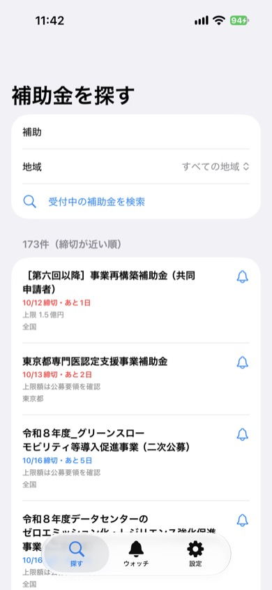
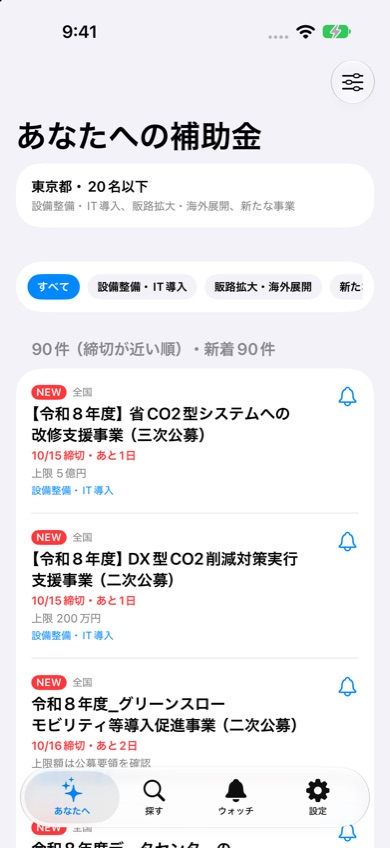
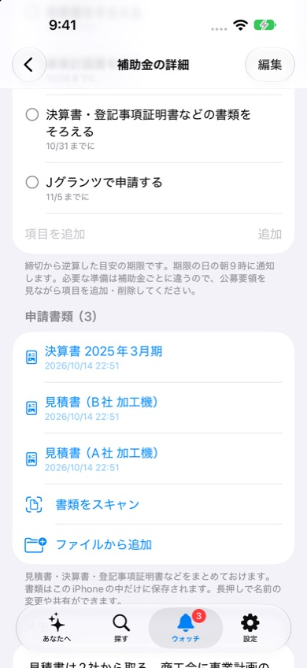

補助金ウォッチ
国や自治体の補助金・助成金の「申請締切をうっかり逃す」を防ぐiPhoneアプリです。受付中の補助金を探して、気になるものの締切前に通知します。
App Storeで近日公開
iPhone（iOS 17以降）・アカウント登録不要



できること
- あなたに合う補助金を自動で集める：所在地・業種・従業員数・やりたいこと（設備投資、販路開拓、新事業など）を登録すると、条件に合う受付中の補助金を集めて締切順に並べます。新しく合う補助金が出たら、アプリを開いていなくても通知します。
- 受付中の補助金を探す：デジタル庁の補助金申請システム「Jグランツ」の公開情報から、いま受付中の補助金・助成金をキーワードと都道府県で検索できます。締切が近い順に並び、締切まで3日以内のものは赤字で表示します。
- 締切前に通知：ベルを押してウォッチすると、締切日の7日前・3日前・前日の朝9時に通知します。締切が延長された場合も、アプリを開いたときに通知が合わせて変わります。
- 申請準備の逆算スケジュール：公募要領の確認、GビズIDプライムの取得、見積書、事業計画書など、申請までの準備を締切から逆算した期限つきのチェックリストにします。期限の日の朝に通知します。
- 申請書類のスキャン・保管：見積書や決算書をカメラでスキャンしてPDFにし、補助金ごとにまとめておけます。書類はiPhoneの中だけに保存します。
- プロ版（買い切り¥480）：ウォッチ件数が無制限に（無料版は3件まで）。通知のタイミング（30日前〜当日）は無料版でも選べます。
使い方
- 「探す」タブで「設備」「IT導入」「創業」などのキーワードを入れ、必要なら都道府県で絞り込みます。
- 気になる補助金のベルを押してウォッチします。
- 締切が近づくと通知が届きます。補助金名を押すと、Jグランツの公募ページを開けます。
こんな方に
- 設備投資やIT導入の補助金を探している中小企業・個人事業主
- 創業や事業承継の助成金をチェックしたい方
- 顧問先の補助金情報を追っている士業・支援機関の方
よくある質問
通知が届きません
iPhoneの「設定」→「通知」→「補助金ウォッチ」で通知が許可されているか確認してください。通知は締切日の指定日数前の朝9時に届きます。すでに過ぎた時刻の通知は届きません。
締切や金額の情報は正確ですか
情報はJグランツ（デジタル庁）の公開APIから取得しています。アプリを開くたびにウォッチ中の補助金の締切を更新しますが、申請要件・締切・金額は必ず各補助金の公募要領でご確認ください。
検索で何も表示されません
キーワードは2文字以上で入力してください。「補助」「助成」「設備」など広めの言葉で検索し、地域で絞り込むと見つけやすくなります。
プロ版を購入したのにウォッチが3件までのままです
「設定」→「プロ版について」から「購入を復元」を押してください。購入時と同じApple IDでサインインしている必要があります。
お問い合わせ
メール: tanacount.support@gmail.com
返信までお時間をいただく場合があります。
情報の出典
出典：Jグランツ。本アプリは、政府公式の補助金申請システムjGrantsのWeb-API機能を利用して取得した情報をもとに、補助金ウォッチ（個人開発・非公式）が表示しています。内容は日本国政府及び自治体によって保証されたものではありません。
ほかのアプリ
棚卸カウンター：JANバーコードを読み取って、小さなお店の在庫を数えるiPhoneアプリ
麻雀点数計算：符と翻から点数を自動計算する、卓に置いて使う麻雀の点数表示アプリ